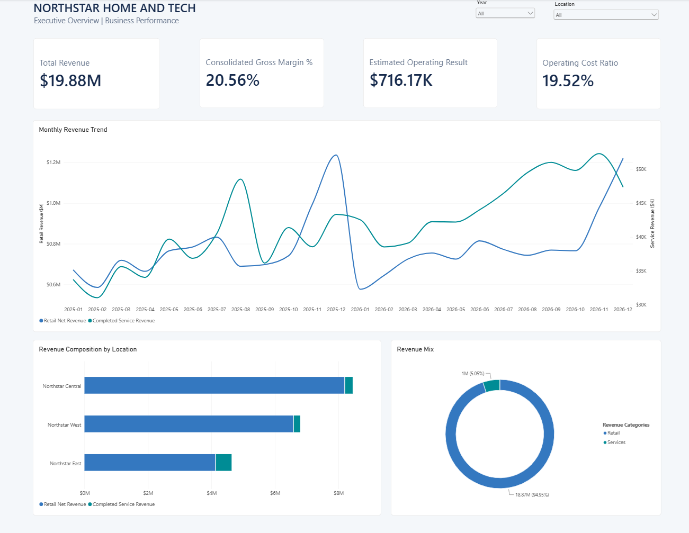
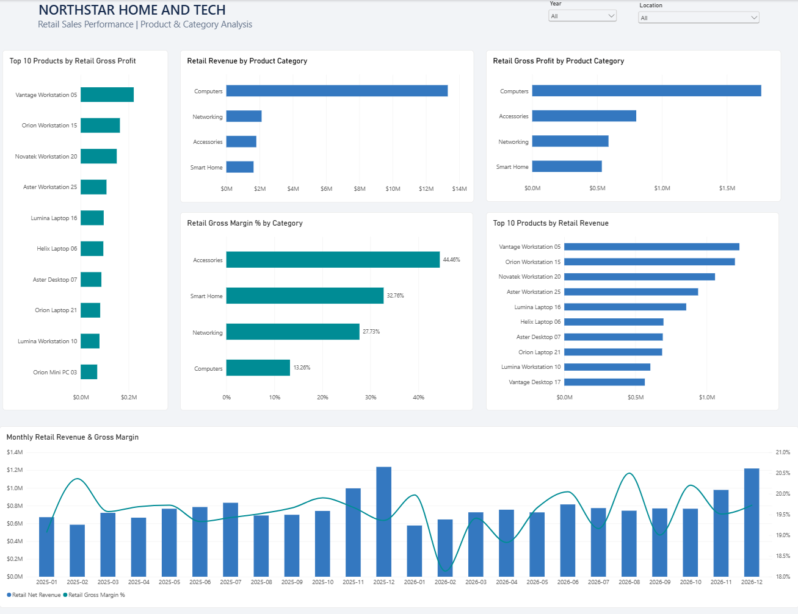
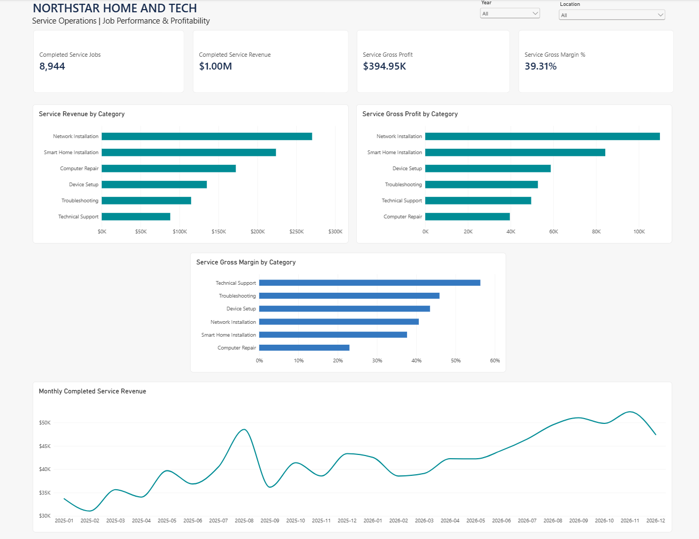
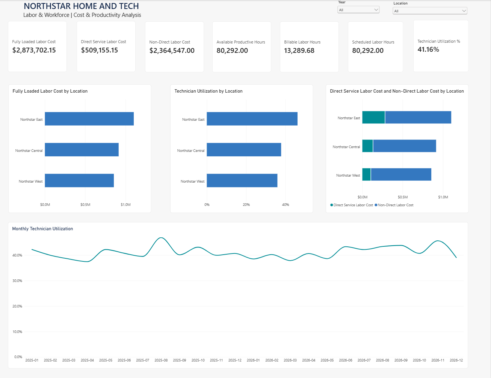
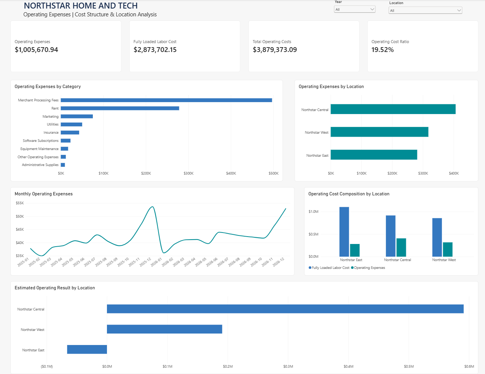
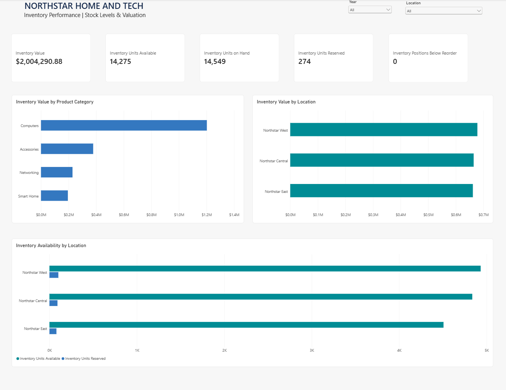

Executive Overview
Northstar Home & Tech is a fictional retailer and technology services provider operating across three business locations.
The completed solution integrates retail sales, technical services, labor, operating expenses, and inventory into six Power BI reporting pages with synchronized Year and Location slicers.

The Business Challenge
Retail, service, workforce, and inventory information originates from different operational processes. Evaluating these activities separately can obscure their combined impact on profitability.
This project establishes a unified analytical view to support management decisions about location performance, retail margins, service profitability, labor utilization, expenses, and inventory investment.
Key Business Findings
01 — Location Profitability
Northstar East recorded an estimated operating loss of $65,982 despite having the highest technician utilization at 46.18%.
Management consideration: Investigate revenue mix, staffing allocation, and location-level margins before making cost decisions.
02 — Retail Margin Differences
Accessories achieved a 44.46% gross margin, compared with 13.26% for computers.
Management consideration: Evaluate product mix, inventory investment, and complementary accessory sales.
03 — Expense Concentration
Merchant processing fees and rent represented approximately 77.1% of non-payroll operating expenses.
Management consideration: Review transaction economics, lease arrangements, and expense allocation assumptions.
04 — Service Profitability
Technical Support achieved approximately 56.32% gross margin, compared with 22.99% for Computer Repair.
Management consideration: Examine pricing, parts consumption, and technician time requirements.
05 — Inventory Interpretation
At year-end 2026, inventory was valued at approximately $2.00 million. No product-location positions were below their recorded reorder points.
Management consideration: Incorporate real supplier lead times, inventory aging, and stockout history before drawing production-level conclusions.
Power BI Dashboard Gallery
Six report pages provide complementary views of Northstar's business performance.





Technical Implementation
The solution combines Python-generated synthetic data, a 13-table PostgreSQL analytical warehouse, dimensional modeling, SQL validation, and Power BI reporting with DAX measures.
Selected reporting contexts were independently reconciled against PostgreSQL aggregates. The model includes job-level labor allocation and snapshot-aware inventory valuation.
Explore the technical project on GitHub
Scope & Limitations
Northstar Home & Tech is entirely fictional. All data is synthetic. No real customer, employee, or transaction information was used.
Operating results are analytical estimates, not audited financial statements. Recommendations identify opportunities for further investigation, not guaranteed business outcomes.